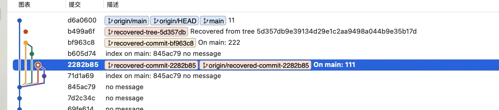
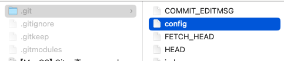
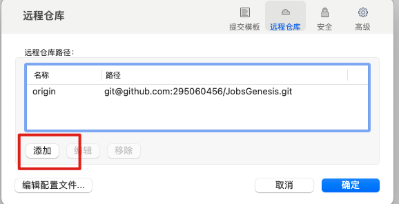
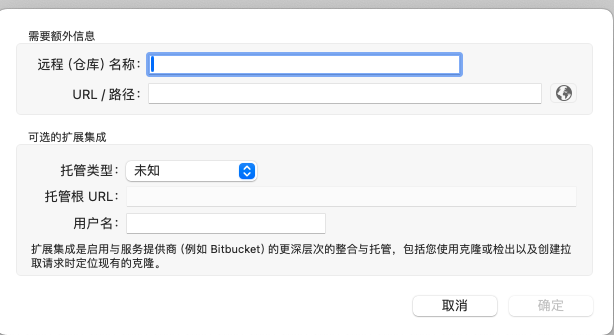

Git的一些使用说明#
🎯 项目白皮书#
- 此文档，主要的受众是 Git 的中高阶使用者
一、高频实用命令 🔼 🔽#
1、👀查看@当前仓库 🔼 🔽#
git remote # 只看名字
git remote -v # 名字 + URL（fetch/push）
git remote get-url --all origin # 只看 origin 的所有 URL
git remote show origin # 详细信息（默认分支、跟踪分支等）
git remote show -n origin # 同上但不连网
git config --get remote.origin.url # 只取一个 URL2、👀查看@所有子模块一起看（含嵌套） 🔼 🔽#
git submodule foreach --recursive 'echo "[$name]"; git remote -v; echo'3、👀查看@针对某个子模块目录 🔼 🔽#
git submodule foreach --recursive 'echo "[$name]"; git remote -v; echo'4、修改 🔼 🔽#
git remote add origin <url> # 添加
git remote set-url origin <new-url> # 改 URL
git remote rename origin upstream # 改名
git remote remove origin # 删除二、进阶使用必修 🔼 🔽#
1、什么是变基（rebase） 🔼 🔽#
-
变基（rebase）是 Git 中的一种操作，用于在改变分支基础（即分支的起点）的同时，将提交历史重新应用到新的基础上
-
变基的主要作用是使提交历史更加线性和整洁，特别是在处理分支合并和多分支协作时
1.2、变基的基本概念 🔼 🔽#
假设我们有以下提交历史：
A---B---C---D (main)
\
E---F---G (feature)如果我们想将 feature 分支变基到 main 分支的最新提交（即 D），可以使用以下命令：
git checkout feature
git rebase main变基操作会重新应用 feature 分支上的提交（E、F、G），使它们基于 main 分支的最新提交（D），结果如下：
A---B---C---D (main)
\
E'---F'---G' (feature)1.3、变基的优点 🔼 🔽#
- 保持提交历史线性：变基可以消除合并提交，使历史记录看起来更加整洁和直观
- 简化日志查看：线性的提交历史使
git log更容易阅读和理解 - 冲突处理集中：变基过程中处理冲突一次性解决，而不是在合并时处理多次冲突
1.4、变基的缺点 🔼 🔽#
- 改变提交哈希：由于变基重新应用提交，原有提交（E、F、G）的哈希会改变。这意味着变基后的提交（E’、F’、G’）和原来的提交是不同的
- 协作冲突：如果变基的分支已经被推送到远程仓库，其他开发者基于这些提交工作后进行变基，可能会引起混乱和冲突
- 不可逆性：变基操作对历史进行了重写，尤其在共享分支上使用时，需要特别小心
1.5、变基的用法 🔼 🔽#
-
变基到另一个分支：
git checkout feature git rebase main -
交互式变基（修改、重排、合并提交）：
git rebase -i main使用交互式变基可以更精细地控制每个提交的变基过程。
-
解决冲突后继续变基： 如果变基过程中发生冲突，可以手动解决冲突，然后使用以下命令继续变基
git rebase --continue -
中止变基： 如果变基过程中遇到问题，想要取消变基，可以使用：
git rebase --abort
2、🍒遴选（cherry-pick） 🔼 🔽#
形象比喻👉
cherry-pick：摘樱桃🍒
git cherry-pick是https://git-scm.com/ 中的一条命令，用于将某个（或多个）特定提交的更改从一个分支复制到另一个分支- 与普通的合并或变基操作不同，
cherry-pick是选择性地提取单个提交 - 这在需要将某些特定更改应用到另一个分支时非常有用，而不必合并整个分支的所有更改
2.1、基本用法 🔼 🔽#
-
假设我们有以下提交历史：
A---B---C---D (main) \ E---F---G (feature) -
现在，我们想把
feature分支上的提交F应用到main分支上。我们可以使用git cherry-pick来完成这个操作1.1、操作步骤 🔼 🔽#
-
切换到目标分支（即你希望将提交应用到的分支）：
git checkout main -
执行
cherry-pick命令，将特定提交应用到当前分支：git cherry-pick <commit-hash>在这个例子中，如果我们要将
F提交应用到main分支，我们可以这样做：git cherry-pick <hash-of-F>
1.2、示例 🔼 🔽#
-
假设我们有如下的提交历史，并且提交
F的哈希是abc123：git checkout main git cherry-pick abc123 -
执行完上述命令后，
main分支的提交历史将变为：A---B---C---D---F (main) \ E---F---G (feature) -
git add <resolved-files> git cherry-pick --continue
1.3、解决冲突 🔼 🔽#
-
如果在执行
cherry-pick时遇到冲突，Git 会暂停操作并提示你解决冲突。你需要手动解决冲突，然后使用以下命令继续：git add <resolved-files> git cherry-pick --continue -
如果你想中止
cherry-pick操作，可以使用：git cherry-pick --abort
1.4、🍒批量遴选 🔼 🔽#
-
可以一次性
cherry-pick多个提交，使用以下命令：git cherry-pick <commit-hash-1> <commit-hash-2> ...或者使用提交范围：这将
cherry-pick从start-commit-hash之后到end-commit-hash的所有提交。git cherry-pick <start-commit-hash>..<end-commit-hash>
1.5、注意事项 🔼 🔽#
- 提交历史变更：
cherry-pick会创建新的提交，并且新提交的哈希与原来的不同 - 适用于单独更改：当你只需要将某些特定更改应用到另一个分支时，
cherry-pick非常有用。如果需要合并整个分支的更改，使用merge或rebase可能更合适 - 冲突风险：与所有涉及代码合并的操作一样，
cherry-pick也可能导致冲突，特别是在目标分支有不同更改的情况下 git cherry-pick是一个强大的工具，允许你选择性地将特定提交从一个分支复制到另一个分支。它在处理特定修复、功能或更改时非常有用，但在使用时需要注意冲突和提交历史的变更
-
三、Git的配置文件config 🔼 🔽#
-
Git 的配置文件
.git/config存储了关于该仓库的配置信息 -
该文件是纯文本文件，使用 INI 格式
-
[core] repositoryformatversion = 0 filemode = true bare = false logallrefupdates = true ignorecase = true precomposeunicode = true [remote "Jobs.Office"] url = https://git.betzz.cc/fm_ios/fm.ios.git fetch = +refs/heads/*:refs/remotes/Jobs.Office/* [remote "Jobs.Github"] url = git@github.com:295060456/JobsOCBaseConfigDemo.git fetch = +refs/heads/*:refs/remotes/Jobs.Github/* [branch "main"] remote = Jobs.Github merge = refs/heads/main [pull] rebase = false[core]部分包含了一些核心配置选项，这些选项影响 Git 的基本行为- repositoryformatversion: 指定仓库的格式版本。默认值是 0
- filemode: 指示 Git 是否追踪文件的可执行权限（即是否追踪文件的权限变化）。如果设置为
true，Git 会记录文件权限的变化 - 表示该仓库是否是裸仓库。裸仓库是没有工作目录的仓库，通常用于远程存储
- logallrefupdates: 如果设置为
true，Git 会记录所有引用（refs）的更新情况 - ignorecase: 表示是否忽略文件名的大小写。在不区分大小写的文件系统上应设置为
true - precomposeunicode: 在 MacOS 上，用于处理 Unicode 正规化问题。设置为
true以解决文件名在不同环境下显示不一致的问题
[remote]部分定义了远程仓库的信息。可以有多个[remote "<name>"]部分来定义多个远程仓库- url: 远程仓库的 URL 地址
- fetch: 指定从远程仓库拉取哪些引用（refs）。
+refs/heads/*:refs/remotes/<remote>/*表示拉取所有分支并在本地创建相应的远程跟踪分支
[branch]部分定义了分支的配置信息，主要包括跟踪的远程分支- remote: 指定分支关联的远程仓库名
- merge: 指定分支关联的远程分支。当执行
git pull或git merge时，会合并此远程分支的更改
四、切换分支 🔼 🔽#
1、期望将高亮的此分支用作主分支 🔼 🔽#

-
方法一：强制推送（如果是个人仓库或团队同意）
# 先切换到目标提交 git checkout 2282b85 # 强制更新 main 分支指向这个提交 git branch -f main 2282b85 # 切换到 main 分支 git checkout main # 强制推送到远程（注意：这会重写远程历史，需要远程服务器开放回滚权限） git push origin main --force -
方法二：创建新分支替代
main（更安全）# 基于目标提交创建新分支 git checkout -b new-main 2282b85 # 推送新分支 git push origin new-main # 在 GitHub/GitLab 等平台上将 new-main 设为默认分支 # 然后删除旧的 main 分支 git push origin --delete main git branch -D main # 重命名本地分支 git branch -m new-main main -
方法三：
Reset方式（如果你在main分支上）# 确保在 main 分支 git checkout main # 重置到目标提交 git reset --hard 2282b85 # 强制推送 git push origin main --force
2、切分支找源头 🔼 🔽#
git show --no-patch --pretty=%P 这里写ID 五、误删除本地已储藏的恢复原理和方案 🔼 🔽#
-
在 SourceTree 中，如果你 误删了已储藏的变更（stash），恢复的可能性取决于你是否还有相关的 Git 记录尚未被垃圾回收（Git GC）；
-
如果此记录已经被提交到远程服务器，那么本地的Git将会清除垃圾，从而找不到误删的记录；
-
git fsck --lost-found# 类似如下的输出 dangling commit abcdef1234567890...# 查看该 dangling commit 的内容 git show abcdef1234567890# 确定需要恢复： # 这会创建一个新分支，把你的 stash 内容恢复出来。 git checkout -b recover-stash abcdef1234567890 -
脚本执行
#!/bin/zsh # 红色提示：确保脚本与 .git 文件夹在同一目录 echo "\033[31m确保该脚本与 .git 文件夹在同一目录下！\033[0m" # 检查是否存在 .git 文件夹 if [ ! -d ".git" ]; then echo "❌ 错误：未在 Git 仓库根目录下运行。请确保此脚本与 .git 文件夹位于同一目录。" exit 1 fi echo "🔍 正在查找所有 dangling 对象..." git fsck --lost-found > .fsck_temp current_branch=$(git rev-parse --abbrev-ref HEAD) echo "✅ 当前分支：$current_branch" mkdir -p recovered/blobs # 恢复 commits（合并为未提交状态） cat .fsck_temp | grep 'dangling commit' | cut -d ' ' -f 3 | while read commit_sha; do branch_name="recovered-commit-$commit_sha" echo "🔄 恢复 commit $commit_sha 为临时分支 $branch_name" git branch $branch_name $commit_sha echo "⚙️ 合并 $branch_name 到 $current_branch（不提交）" git merge --allow-unrelated-histories --no-commit $branch_name done # 恢复 trees（包装为临时 commit 后合并，不提交） cat .fsck_temp | grep 'dangling tree' | cut -d ' ' -f 3 | while read tree_sha; do commit_sha=$(echo "tree $tree_sha" | git commit-tree $tree_sha -m "恢复 tree $tree_sha") branch_name="recovered-tree-$tree_sha" echo "🌲 恢复 tree $tree_sha 为临时 commit：$commit_sha（分支 $branch_name）" git branch $branch_name $commit_sha echo "⚙️ 合并 $branch_name 到 $current_branch（不提交）" git merge --allow-unrelated-histories --no-commit $branch_name done # 恢复 blobs（保存在 recovered/blobs，已 add 但不 commit） cat .fsck_temp | grep 'dangling blob' | cut -d ' ' -f 3 | while read blob_sha; do filename="recovered/blobs/$blob_sha.txt" echo "📄 恢复 blob $blob_sha 到文件 $filename" git cat-file -p $blob_sha > $filename git add $filename done rm .fsck_temp echo "" echo "✅ 所有内容已恢复并合并到当前分支（未提交）" echo "👉 请手动查看变更，确认无误后再执行 commit"
六、实操案例 🔼 🔽#
1、同一个文件夹（文件内容相同），但是来自于2个不同的远程仓库 🔼 🔽#
-
fatal: refusing to merge unrelated histories 表明正在尝试合并两个没有共同提交历史的分支
-
要解决这个问题，你可以使用
--allow-unrelated-histories选项来强制 Git 合并这两个独立的历史记录git --no-optional-locks -c color.branch=false -c color.diff=false -c color.status=false -c diff.mnemonicprefix=false -c core.quotepath=false -c credential.helper=sourcetree fetch Jobs.Office From https://git.betzz.cc/fm_ios/fm.ios * [new branch] main -> Jobs.Office/main git --no-optional-locks -c color.branch=false -c color.diff=false -c color.status=false -c diff.mnemonicprefix=false -c core.quotepath=false -c credential.helper=sourcetree pull --commit --rebase=false Jobs.Office main From https://git.betzz.cc/fm_ios/fm.ios * branch main -> FETCH_HEAD fatal: refusing to merge unrelated histories Completed with errors, see above -
分支分叉的问题。Git 需要指定如何合并分支
Last login: Wed Jul 17 10:27:35 on ttys000 ➜ Desktop /Users/user/Desktop/q ➜ q git:(main) git pull Jobs.Office main --allow-unrelated-histories From https://git.betzz.cc/fm_ios/fm.ios * branch main -> FETCH_HEAD hint: You have divergent branches and need to specify how to reconcile them. hint: You can do so by running one of the following commands sometime before hint: your next pull: hint: hint: git config pull.rebase false # merge hint: git config pull.rebase true # rebase hint: git config pull.ff only # fast-forward only hint: hint: You can replace "git config" with "git config --global" to set a default hint: preference for all repositories. You can also pass --rebase, --no-rebase, hint: or --ff-only on the command line to override the configured default per hint: invocation. fatal: Need to specify how to reconcile divergent branches.
-
1.1、自动合并 🔼 🔽#
-
设置（本地仓库）合并策略为 merge
git config pull.rebase false或者
设置（全局所有仓库）合并策略为 merge
git config --global pull.rebase false -
git pull Jobs.Office main --allow-unrelated-histories
1.2、手动合并 🔼 🔽#
-
git fetch Jobs.Office -
git merge Jobs.Office/main --allow-unrelated-histories
1.3、如果有冲突，解决冲突 🔼 🔽#
git add .
git commit -m "Resolve merge conflicts"1.4、同步远程仓库 🔼 🔽#
git push Office main2、实操总结 🔼 🔽#
-
远程空仓库有2种方式：
-
（直接推送）直接本地获取到仓库地址，直接本地发起push同步。如果本地仓库是新创建的，那么之前的远程的历史记录将不会存在
-
更适合于：
-
新创建的本地仓库准备推送到一个空的远程仓库
-
已有完整代码的本地仓库初次设置远程仓库地址并进行首次推送
-
-
-
（先拉取再推送）远程仓库pull以后，本地同步以后，再同步远程仓库
- 更适合于：
- 需要确保本地仓库和远程仓库一致性
- 多人协作开发的项目，确保所有开发者都能获取最新的远程仓库状态
- 需要保留和获取远程仓库的完整历史记录和分支信息
- 更适合于：
-
-
即便是文件内容一致，也需要进行同步（分支等）
-
上述问题是因为虽然本地文件和远程仓库文件一致（没有什么需要合并的冲突），仅仅是没有共同提交历史
-
如果是远程仓库已经存在代码，需要和本地仓库进行匹配，就会遇到上述问题
-
如果是远程仓库为新建的空仓库，那么可以本地通过配置git.config的方式进行（
.git是隐藏文件夹）
- 或者通过第三方的Git.GUI软件，进行添加设置（这里以sourcetree为例）

